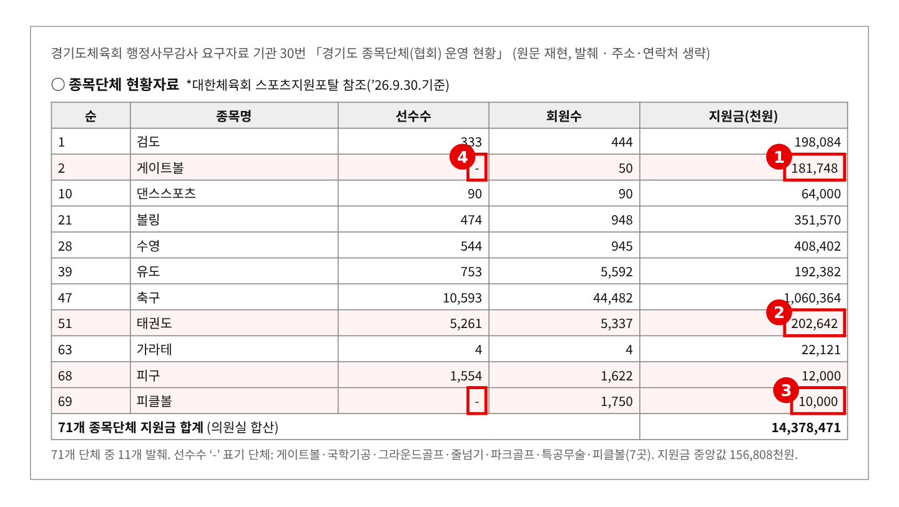
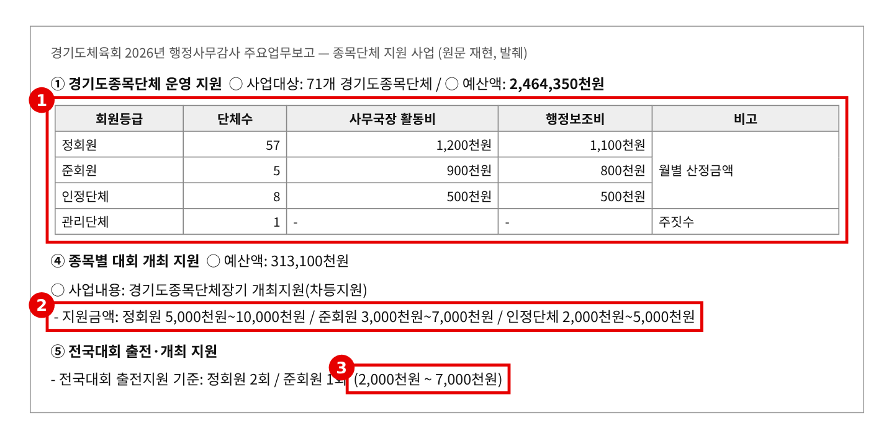
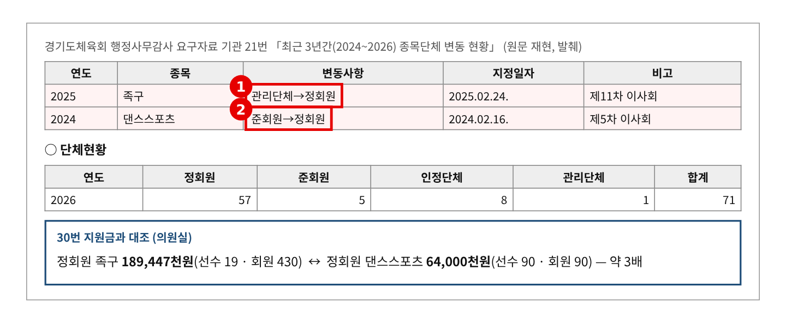
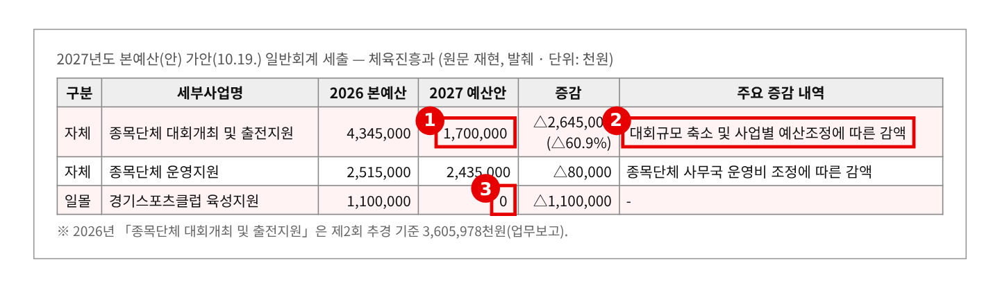

2026년 행정사무감사 질의서 (발언용 · 5분) — 기관 2일차
종목단체 지원금 143억, 무엇을 기준으로 나눕니까
— 규모와 따로 노는 지원금, 내년엔 대회 예산 61% 감액
문화체육관광위원회 황은화 위원 → 경기도체육회 사무처장
| ① 지원금, 기준이 안 보인다 | 71개 도 종목단체 지원금 합계 143억 8천만 원. 선수 0명·회원 50명 게이트볼 1억 8천만 원 ↔︎ 선수 5,261명 태권도 2억 원 → 회원 1,750명 피클볼은 1천만 원 — 규모와 지원금이 따로 논다 |
| ② 정해 둔 기준은 일부뿐 | 등급별 정액 기준이 있는 건 운영지원 24억 6천만 원(사무국장 활동비·행정보조비)과 대회개최 차등(500만~1,000만 원) → 나머지 100억 원 넘는 돈은 어떤 기준으로 나가는지 자료에 없다 |
| ③ 2027년, 대회 예산 61% 감액 | 「종목단체 대회개최 및 출전지원」 43억 4,500만 원 → 17억 원(△60.9%), 스포츠클럽 육성 11억 원 일몰 → 기준 없이 줄이면 작은 생활체육 종목부터 밀린다 |
※ 의원실 메모 (발언 제외) — 다른 위원 요구자료와 겹치는지 점검 · 30번(종목단체 운영 현황)은 황은화 위원 단독 요구. 비슷한 자료: 13번 가맹단체 보조금 지급(전예슬·이종춘), 38~41번 보조금 집행·계약·정보공개·배드민턴(이오수·이지혜), 2차 6번 도비 보조금(김승기), 2차 7·8번 공직유관단체·야구소프트볼협회(김승기·안시현). 이 위원들은 개별 단체의 집행·계약·비리 쪽이다. 이 질의는 "나누는 기준"만 다루고, 야구소프트볼·배드민턴·태권도협회 개별 문제는 언급하지 않는다. · 21번·2차 1번 등급심의(이진형·이병숙·김승기·안시현·채명신·한규찬, 이종춘·최규진)는 등급 심의 자체를 다룬다. 여기서는 등급을 기준표로만 인용한다. · 11번 스포츠클럽(김승기·안시현·전예슬·최성운·황은화 공동)은 앞 순서에서 나올 가능성이 크다 → 질문 3에서 한 줄만 언급한다. · 30번의 선수수·회원수는 체육회가 "대한체육회 스포츠지원포탈 참조"라고 적은 숫자다. 생활체육 종목은 실제 동호인보다 적게 잡혔을 수 있다. 회원수만으로 많다·적다를 단정하지 않고, "기준이 무엇이냐"를 묻는다. 30번 지원금이 어떤 사업을 합친 금액인지도 자료에 없다(요구사항 하나). |
※ 발언 중 [근거 n] 표시는 맨 뒤 「근거자료」 번호입니다. 읽지 않고, 해당 자료를 화면에 띄웁니다.
■ 발언 — 문제 지적 (약 3분 30초)
사무처장님, 도 종목단체 지원금에 대해 여쭙겠습니다.
체육회 도 종목단체는 71개입니다. 제가 요구한 30번 자료를 보면, 올해 이 단체들에 나간 지원금이 모두 143억 8천만 원입니다. [근거 1]
▶ 문제 1. 지원금이 단체 규모와 따로 놉니다
게이트볼협회는 등록 선수가 없고 회원이 50명인데 지원금이 1억 8천만 원입니다. 태권도협회는 선수가 5,261명인데 2억 원입니다. 선수가 5천 명 넘는 단체와 선수가 없는 단체가 거의 같은 돈을 받는 겁니다. [근거 1]
반대로 피클볼협회는 회원이 1,750명인데 1천만 원, 피구연맹은 1,622명인데 1,200만 원입니다.
물론 회원 수만으로 정할 수는 없습니다. 전국체전 종목인지, 대회를 몇 번 여는지도 봐야 합니다. 그런데 그런 기준이 자료 어디에도 안 보입니다.
▶ 문제 2. 정해 둔 기준은 일부뿐입니다
업무보고를 보면 운영지원은 등급별로 정회원 한 달 230만 원, 인정단체 100만 원으로 정해져 있고, 대회 개최는 500만 원에서 1,000만 원 사이로 차등 지원합니다. [근거 2]
그런데 이렇게 기준이 있는 운영지원은 24억 6천만 원입니다. 나머지 100억 원이 넘는 돈이 어떤 기준으로 나가는지는 어디에도 없습니다. [근거 1][근거 2]
같은 정회원인데도 댄스스포츠연맹은 6,400만 원, 족구협회는 1억 8,900만 원으로 세 배 차이입니다. 등급 기준으로는 설명이 안 됩니다. [근거 3]
▶ 문제 3. 내년엔 대회 예산이 61% 줄어듭니다
2027년 예산안 가안을 보면 「종목단체 대회개최 및 출전지원」이 43억 4,500만 원에서 17억 원으로 61% 줄고, 스포츠클럽 육성지원 11억 원은 일몰입니다. [근거 4]
돈이 있을 때도 기준이 안 보였습니다. 기준 없이 줄이면 목소리 큰 단체 몫은 남고, 작은 생활체육 종목부터 밀립니다.
■ 일괄 질문 (질문·답변 약 1분)
사무처장님, 세 가지 여쭙겠습니다.
첫째, 종목단체 지원금은 무엇을 기준으로 나눕니까? 그 기준이 문서로 정해져 있습니까?
둘째, 운영지원 말고 나머지 100억 원은 누가, 어떤 기준으로 정합니까?
셋째, 줄어드는 대회 예산 26억 원은 단체별로 어떻게 나눌 계획입니까?
▷ "등급별로 차등 지원하고 있다"
→ 등급 기준이 있는 건 운영지원 24억 원뿐입니다. 같은 정회원끼리도 세 배 차이가 납니다.
▷ "회원수는 대한체육회 포털 숫자라 실제와 다르다"
→ 그렇다면 체육회는 단체 규모를 무엇으로 판단합니까? 지원금을 나눌 때 쓰는 규모 자료를 내 주십시오.
▷ "예산은 도가 정하고, 배분은 확정 후 정하겠다"
→ 확정되고 나서 정하면 늦습니다. 감액 규모를 아는 지금, 배분 원칙부터 세워야 합니다.
■ 마무리 · 요구사항 (약 50초)
사무처장님, 143억 원은 도민 세금입니다. 많이 받는 단체도, 적게 받는 단체도 왜 그만큼 받는지 알 수 있어야 합니다. 예산이 줄어드는 만큼 기준은 더 분명해야 합니다. 꼼꼼히 챙기겠습니다.
하나, 71개 종목단체의 2024년부터 2026년까지 지원금을 사업별로 나눈 내역과 산정 근거를 감사 종료 전까지 내 주십시오.
둘, 등급·규모·성과를 어떻게 반영하는지까지 담은 지원금 배분 기준을 문서로 정해 공개하고, 2027년 3월까지 보고해 주십시오.
셋, 2027년 대회개최·출전지원 감액 배분안과 스포츠클럽 일몰 대책을 본예산 상임위 심사 전까지 보고해 주십시오.
■ 참고 · 감사 중 추가 요구자료
· 30번 「지원금」에 포함된 사업 목록(운영지원·대회개최·전국대회 출전·전국체전 강화훈련·선수육성 등)
· 종목단체 지원 관련 내부 지침·배분 기준 문서(있다면 제정일 포함)
· 2027년 「종목단체 대회개최 및 출전지원」 감액 내역(사업별)
· 예상 소요시간 — 발언 약 3분 15초(965음절: 문제 지적·일괄 질문 3개·마무리 요구) + 집행부 답변 약 1분(질문당 20초) + 자료 화면 전환 약 20초 = 약 4분 35초. 예비 반론은 시간이 남을 때만 사용 ※ 분당 300음절 기준
근 거 자 료
빨간 상자·번호는 발언에서 짚는 부분입니다. "원문 재현"은 요구자료·업무보고 원문 표를 그대로 옮긴 것이고, "의원실 산출"은 원자료로 계산한 값입니다.
▶ 질문 1·2 관련
근거 1. 도 종목단체별 선수수·회원수·지원금 
※ 출처: 경기도체육회 2026년도 행정사무감사 요구자료(최종) 기관 30번 「경기도종목단체(협회) 운영 현황」(종목육성팀) — 황은화 위원 요구 |
근거 2. 체육회가 밝힌 종목단체 지원 기준 
※ 출처: 경기도체육회 「경기도의회 행정사무감사 업무보고(최종)」 Ⅲ. 주요사업 — ① 경기도종목단체 운영 지원, ④ 종목별 대회 개최 지원, ⑤ 전국대회 출전·개최 지원 |
근거 3. 종목단체 등급 — 댄스스포츠·족구는 정회원 
※ 출처: 경기도체육회 2026년도 행정사무감사 요구자료(최종) 기관 21번 「최근 3년간(2024~2026) 종목단체 변동 현황」(종목육성팀) |
▶ 질문 3 관련
근거 4. 2027년 본예산(안) — 종목단체 대회 예산 감액, 스포츠클럽 일몰 
※ 출처: 「2027년 본예산(안) 일반회계 세출」 가안(10.19. 공개분, 최종본 아님) 체육진흥과 — 2026.10.26. 현장정책회의 「문화체육관광국 2027년 본예산안」 |